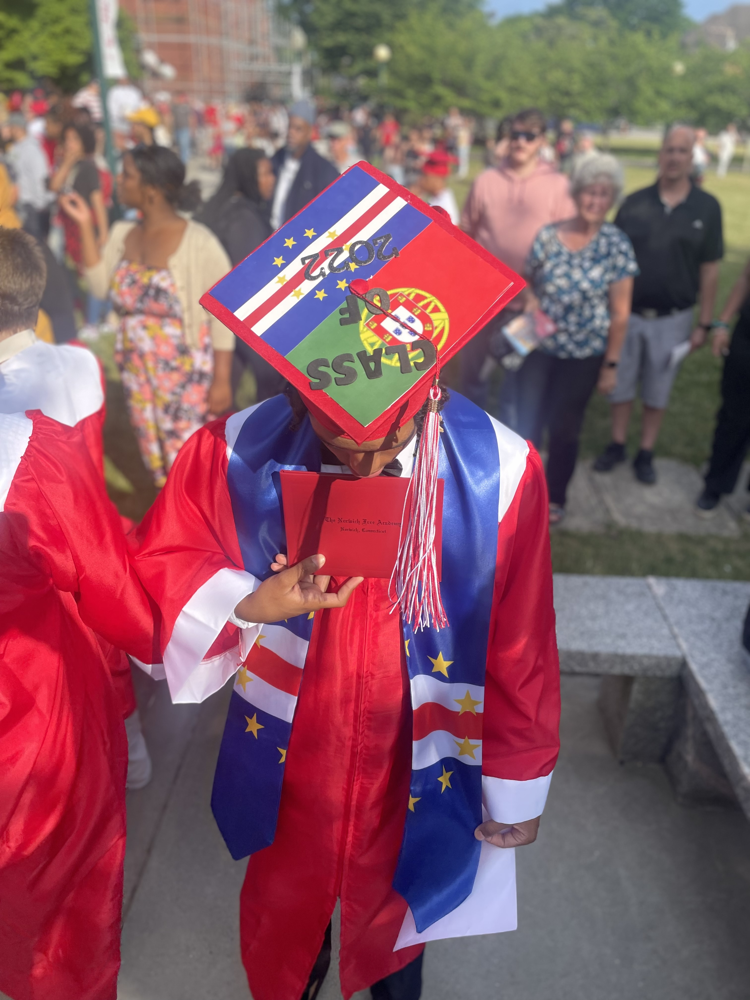
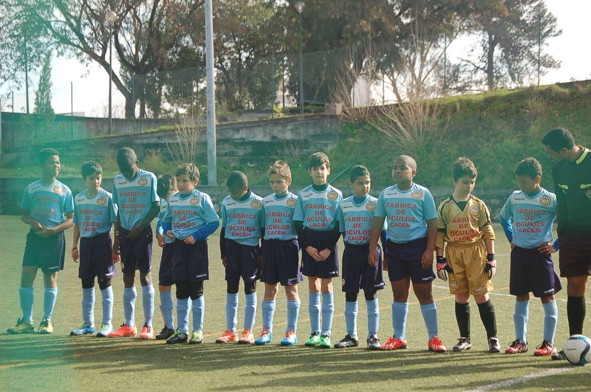

|
|
|
|
|
|---|

Here is a little about me. I am a student at URI majoring in computer
engineering
and minoring in computer science,
I am from Norwich, Connecticut and graduated from Norwich Free Academy
but was born in Portugal and lived there for about 11 years before moving.
My hobbies are playing soccer and video games.
In the picture to the right you can see me standing next to the referee before the start
of my soccer game. The picture to the left is from graduation, in my cap you can see the flag of both Portugal and Cape verde a small island where
my parents are from.